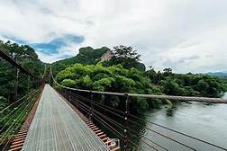

คำขวัญ
ประจำจังหวัด
( เมืองร้อยเกาะ เงาะอร่อย หอยใหญ่ ไข่แดง แหล่งธรรมะ )
ความหมาย
(เมืองร้อยเกาะ)
ชื่อนี้มาจากสภาพพื้นที่ส่วนหนึ่งของจังหวัดสุราษฎร์ธานี ประกอบด้วยหมู่เกาะใหญ่น้อยมากมาย เช่น
เกาะสมุย เกาะพะวัน เกาะเต่า เกาะริกัน เกาะหลัก เกาะนก เกาะกล้วย เกาะพลวย เกาะปราบ เกาะแตน
เป็นต้น ซึ่งเกาะเหล่านี้ส่วนหนึ่งได้ถูกกำหนดและประกาศให้เป็นเขตอุทยานแห่งชาติ
เรียกว่า อุทยานแห่งชาติหมู่เกาะอ่างทอง ซึ่งประกอบด้วยเกาะใหญ่น้อยหลายสิบเกาะ มีเนื้อที่ประมาณ
156,250 ไร่ หมู่เกาะต่างๆ ของจังหวัดสุราษฎร์ธานีเป็นแหล่งท่องเที่ยวที่สวยงาม
และมีชื่อเสียงทั่วโลกทำให้นักท่องเที่ยวทุกมุมโลกหลั่งไหลสู่หมู่เกาะเหล่านี้ปีละหลายแสนคน
ทำให้จังหวัดสุราษฎร์ธานีเป็นแหล่งท่องเที่ยวที่สำคัญจังหวัดหนึ่งของประเทศไทย
(เงาะอร่อย) เงาะโรงเรียน เป็นเงาะที่มีรสชาติอร่อย
เนื้อกรอบ หวานหอม และมีปลูกกันมากอย่างเป็นล่ำเป็นสัน และมีชื่อเสียงเป็นที่นิยมของผู้บริโภค ก็คือ
อำเภอบ้านนาสาร ซึ่งเป็นถิ่นกำเนิดของชื่อเงาะโรงเรียน เงาะโรงเรียนมีประวัติเล่าว่า เมื่อปี พ.ศ.
2468 มีชาวจีนสัญชาติมาเลเซีย ชื่อนายเค วอง มีภูมิลำเนาอยู่ที่เมืองปินังประเทศมาเลเซีย
ได้เดินทางเข้ามาทำเหมืองแร่ดีบุก ที่หมู่บ้านเหมืองแกะ ตำบลนาสาร อำเภอบ้านนาสาร
โดยสร้างบ้านพักเป็นเรือนไม้ 2 ชั้น ในที่ดินที่ซื้อจำนวน 18 ไร่ ใกล้ทางรถไฟด้านทิศตะวันตก
ได้นำเมล็ดเงาะมาปลูกข้างบ้านพัก ปรากฏว่ามีเงาะต้นหนึ่งมีผลที่มีลักษณะต่างไปจากต้นอื่น คือ
รูปผลค่อนข้างกลมเนื้อกรอบ หวาน หอม เปลือกบางรสชาติอร่อย เมื่อนายเค วอง
เลิกสัมกิจการเหมืองแร่ในปี พ.ศ.2497 ได้ขายที่ดินจำนวน 18 ไร่ พร้อมบ้านดังกล่าว
ให้่กระทรวงธรรมการ (กระทรวงศึกษาธิการ) ซึ่งได้ปรับปรุงใช้เป็นสถานที่เรียน เรียกว่า โรงเรียนนาสาร
เงาะที่นาย เควอง ปลูกไว้ ก็ ได้ขยายพันธุ์ประชาชนใช้ต้นพันธุ์เดิม จึงเรียกว่า เงาะโรงเรียน
(หอยใหญ่) หมายถึง
หอยนางรมซึ่งหอยนางรมสุราษฎร์ธานีีเป็นที่รู้จักอย่างแพร่หลาย ในหมู่นักบริโภค
ว่าเป็นอาหารทะเลที่ขึ้นชื่อ มีรสชาติอร่อย ชวนรับประทาน
การเพาะเลี้ยงหอยนางรมในจังหวัดสุราษฎร์ธานี เริ่มประมาณปี พ.ศ. 2504 ทดลองเลี้ยงที่แหลมซุย
อำเภอไชยา ต่อมาได้นำมาเพาะเลี้ยงที่บริเวณปากคลองท่าทอง และปากคลองกะแดะ อำเภอกาญจนดิษฐ์
หอยนางรมมี 2 ชนิด คือ ชนิดพันธุ์เล็ก เรียกว่า หอยเจาะ ชนิดพันธุ์ใหญ่ เรียกว่า หอยตะโกรม
ลักษณะเป็นหอย 2 ฝา พบทั่วไปบริเวณน้ำตื้นชายฝั่ง หอยนางรมจะวางไข่ตลอดปี
แต่จะพบมาในระหว่างเดือนกุมภาพันธ์ ถึงเดือนเมษายน และวางไข่ครั้งหนึ่งประมาณ 1-9 ล้านฟอง
(ไข่แดง)
เป็นนามเรียกลักษณะของไข่เค็มไชยาซึ่งเป็นไข่เค็มที่มีชื่อเสียงกล่าวขวัญกันทั่วไป
เพราะไข่เค็มไชยาเป็นไข่เค็มที่ทำจากไข่เป็ดที่เลี้ยงในเขตอำเภอไชยา มีลักษณะพิเศษ
คือไข่แดงมีสีแดงจัด ไข่แดงมีมากกว่าไข่ทั่วไป สีสันมันวาว ชวนรับประทาน ไข่เค็มไชยา
มีการจัดทำอย่างเป็นล่ำเป็นสันที่อำเภอไชยาเป็นสินค้าซึ่งถือเป็นเอกลักษณ์อย่างหนึ่งไชยา
และชาวสุราษฎร์ธานีมีจำหน่าย ในจังหวัดสุราษฎร์ธานีโดยเฉพาะที่อำเภอไชยา
(แหล่งธรรมะ) สุราษฎร์ธานี
มีความรุ่งเรืองทางพุทธศาสนาตั้งแต่อดีตเห็นได้จากร่องรอย ความเจริญที่ยังคงปรากฎให้เห็นอยู่ทั่งไป เช่น
วัดพระบรมธาตุไชยาราชวรวิหาร วัดแก้ว วัดหลง อำเภอไชยา วัดเวียง อำเภอเวียงสระ วัดถ้ำสิงขร
อำเภอคีรีรัฐนิคม วัดเขาพระอานนท์และวัดเขาศรีวิชัย อำเภอพุนพิน
และอีกหลายแห่งแหล่งธรรมะที่ชาวจังหวัดสุราษฎร์ธานี ภาคภูมิใจ
เป็นที่ศรัทธาเลื่อมใสของชาวพุทธทั้งไทยและต่างประทศ ที่มาเยือนมากมาย ตลอดปี
สวนโมกข์พลาราม หรือ วัดธารน้ำไหล เรียกสั้นๆ ว่า "สวนโมกข์"
ท่านพุทธทาสได้สร้างสวนโมกข์ขึ้น เมื่อปี พ.ศ. 2502 มีเนื้อที่375 ไร่
เป็นวัดที่แปลกไม่มีสิ่งก่อสร้างเป็นโบสถ์วิหารแต่จะใช้ธรรรมชาติอันร่มรื่นด้วยแมกไม้นานาพันธุ์ทำให้ได้ใกล้ชิดธรรมชาติ
ศึกษาธรรมะ วิปัสสนาตามธรรมชาติ ที่นี่ มีโรงมหรสพทางวิญญาณลานหินโค้ง
โรงปั้นสระน้ำซึ่งทุกแห่งของสวนโมกข์สามารถศึกษาธรรมะได้อย่างเข้าใจถึงแก่นแท้ของพุทธศาสนาสวนโมกข์
เป็นแหล่งที่เผยแพร่พระพุทธศาสนาที่สำคัญ แห่งหนึ่งของไทย
ทั่วโลกยอมรับและยกย่องท่านพุทธทาสว่าเป็นบุคคล
สถานที่ท่องเที่ยว
1. เขาสก หรือ เขื่อนรัชชประภา (เขื่อนเชี่ยวหลาน)
เขื่อนรัชชประภาหรือที่เรารู้จักกันในชื่อของเขื่อนเชี่ยวหลาน
สถานที่ท่องเที่ยวยอดฮิตที่สุดในจังหวัดสุราษฏร์ธานี เป็นเขื่อนที่กินอาณาบริเวณกว้างขวางถึง 500
ไร่ มีทัศนียภาพสวยงาม ไปด้วยภูเขาและชะง่อนผาหินปูนที่โอบล้อมอยู่โดยรอบ
ไฮไลท์เด็ดของเขื่อนเชี่ยวหลานนั้นก็คือ หินสามเกลอ
หรือที่รู้จักกันในนามของกุ้ยหลินเมืองไทยและกิจกรรมต่างๆ
ไม่ว่าจะเป็นการดำน้ำดูฝูงปลาและปะการังไปจนถึงการพายเรือคายัคก็เป็นกิจกรรมที่ได้รับความนิยมไม่น้อย
นอกจากนี้ที่เขื่อนเชี่ยวหลานยังมีที่พักเก๋ๆ
กลางเขื่อนเอาไว้ให้คุณนอนเอกเขนกและทอดอารมณ์ดื่มดำความสวยงามของที่นี่ ได้อย่างเต็มที่
เรียกได้ว่าหากใครได้แวะเข้ามาที่นี่จะต้องร้องว้าว ไม่อยากกลับออกมาสู่โลกภายนอกเลยทีเดียว
2. (วัดพระบรมธาตุไชยาราชวรวิหาร )
สิ่งศักดิ์สิทธิ์คู่บ้านคู่เมืองที่ขาดไม่ได้เมื่อได้มาท่องเที่ยวที่จังหวัดสุราษฏร์ธานี
วัดพระบรมธาตุไชยาวรวิหารแห่งนี้มีความงดงามของสถาปัตยกรรมในสมัยกรุงศรีวิชัยที่สวยงามและสมบูรณ์แบบที่สุดจนได้รับการยกย่องให้เป็นโบราณสถานที่สำคัญแห่งหนึ่งในประเทศ
ไฮไลท์เด็ดของวัดพระบรมธาตุไชยาฯ แห่งนี้ก็คือ
พระพุทธรูปที่สลักเสลาขึ้นจากศิลาทรายสีแดงที่มีความงดงามและเป็นเอกลักษณ์ของฝีมือช่างไชยาในสมัยนั้น
อีกทั้งยังมีพิพิธภัณฑ์สถานที่ได้รวบรวมโบราณวัตถุสมัยกรุงศรีวิชัยที่ขุดพ้นในบริเวณโดยรอบวัดแห่งเอาไว้ให้คุณได้เข้าไปเยี่ยมชม
4. (สวนโมกข์พลาราม)
อีกหนึ่งความภาคภูมิใจของพุทธศาสนิกชนที่คุณไม่ควรพลาด
สวนโมกพลารามหรือสวกโมกข์นั้นถูกก่อตั้งโดยท่านพุทธทาสภิกขุ
พระอาจารย์ที่มีความสำคัญมากที่สุดองค์หนี่งในวงการพระพุทธศาสนา
ภายในสวนนั้นจะโอบล้อมไปด้วยแมกไม้ร่มรื่นให้ความรู้สึกเย็นสบาย
อีกทั้งยังมีกิจกรรมปฏิบัติธรรมไว้รองรับสำหรับผู้ที่มีใจรักและศรัทธาในพุทธศาสนา
สำหรับจิตใจที่เหนื่อยล้าจากความทุกข์และการทำงานในปัจจุบัน
เมื่อได้มาเยี่ยมชมและพูดคุยสนทนาธรรมกับเหล่าผู้ปฏิบัติธรรมแล้วก็จะได้รับข้อคิดและแรงใจดีๆ
กลับไปพร้อมลุยกับทุกอุปสรรคที่ต้องเผชิญ
5. (อุทยานธรรมเขานาในหลวง)
อีกหนึ่งในแลนด์มาร์คสำคัญที่พลาดไม่ได้เมื่อมาท่องเที่ยวจังหวัดสุราษฏร์ธานี
เป็นพุทธสถานที่ได้รับความนิยมทั้งในหมู่นักท่องเที่ยวและชาวพื้นที่
ด้วยความสวยงามที่เป็นเอกลักษณ์ไม่ซ้ำใครของสถาปัตยกรรม เช่น ซุ้มประตูพุทธวดี 9 ยอด
ที่เมื่อพระอาทิตย์ขึ้นและตก
แสงสีทองเรืองรองรองนั้นจะลอดผ่านซุ้มประตูโค้งมนออกมาอย่างสวยงามประน่าทับใจ
หรือเจดีย์ลอยฟ้าที่บรรจุพระบรมสารีริกธาตุที่ตั้งเด่นเป็นสง่าก็ดูสวยแปลกตาน่ามองไม่แพ้กัน
6. (ตลาดน้ำประชารัฐ บางใบไม้)
เป็นสถานที่ท่องเที่ยวแห่งใหม่ที่กำลังได้รับความนิยมสูงสุดในจังหวัดสุราษฏร์ธานี
ตลาดน้ำประชารัฐนั้นเกิดขึ้นจากความร่วมแรงร่วมใจของชาวบ้านบางใบไม้ ซึ่งเป็นชุมชนเล็กๆ
ที่มีเสน่ห์และความน่าสนใจไม่แพ้สถานที่ท่องเที่ยวอื่นๆ เลย คุณสามารถเดินเล่นชิลๆ
ดื่มด่ำไปกับบรรยากาศคึกคักของชาวบ้าน แวะชิมอาหารพื้นบ้านและช้อปปิ้งผลิตภัณฑ์ของชุมชนแห่งนี้ได้
นอกจากนี้ยังมีกิจกรรมล่องเรือชมความงดงามและเงียบสงบของแม่น้ำร้อยสาย
แม่น้ำสายสำคัญที่หล่อเลี้ยงชุมชนละแวกนี้ นับเป็นอีกหนึ่งสถานที่ท่องเที่ยวน่าสนใจ
ที่เราอยากให้คุณแวะมาเยี่ยมเยียน
7. (ถ้ำน้ำตกผาแดง)
ถ้ำน้ำตกผาแดงนั้นเป็นแหล่งท่องเที่ยวที่สำคัญ
ความน่าทึ่งของของธรรมชาติแห่งนี้ที่ภายในถ้ำเราจะได้พบหินงอกหินย้อยมหัศจรรย์ธรรมชาติที่มีความสวยงามแปลกตา
เมื่อเราเดินลอดถ้ำเข้าไปจะพบกับน้ำตกผาแดงที่มีสวยสะดุดตา
ราวกับหลุดเข้าไปในอีกโลกหนึ่งที่เราไม่เคยพานพบมาก่อนเลย ไฮไลท์เด็ดๆ ของถ้ำน้ำตกผาแดงก็คือ
หินงอกหินย้อยสีแดงขนาดใหญ่ลักษณะโค้งมน มีรูปร่างคล้ายผ้าม่านที่คุณไม่ควรพลาด
เรียกได้ว่าน้ำตกถ้ำผาแดงนั้นเป็นสถานที่ท่องเที่ยวที่น่าตื่นตาตื่นใจ
ที่คุณต้องตกใจจนอ้าปากค้างกับความสวยงามของธรรมชาติเลยทีเดียว

8. (สะพานแขวน วัดเขาพัง)
สะพานแขวนเขาพังหรือสะพานเขาเทพพิทักษ์เป็นอีกหนึ่งแลนด์มาร์คที่เมื่อมาถึงเขื่อนเชี่ยวหลานแล้วคุณต้องไม่พลาด
เป็นสะพานแขวนขนาดใหญ่ทอดตัวยาวกว่า 120 เมตร
ตัดข้ามคลองสะแพงและหมู่แมกไม้น้อยใหญ่ที่ร่มรื่นและเขียวขจี
บรรยากาศโดยรอบนั้นเป็นทิวเขาเทพพิทักษ์ที่เมื่อเรามองลอดผ่านสะพานแขวนแล้วจะเห็นเป็นรูปร่างคล้ายหัวใจสวยงามแปลกตามาก
นับเป็นอีกจุกที่ควรต้องมาถ่ายรูปเก็บความประทับใจ เอาไว้โพสต์ลงไอจีเก๋ๆ
ให้เพื่อนทุกคนอิจฉาจนตาร้อน
9. (เกาะเต่า)
เกาะเต่านั้นเป็นอีกหนึ่งความภาคภูมิใจของจังหวัดสุราษฏร์ธานี เป็นเกาะเล็กๆ
ที่มีลักษณะคล้ายเมล็ดถั่วล่องลอยอยู่ใจกลางทะเล มีชายหาดมากถึง 11
แห่งไว้รอต้อนรับนักท่องเที่ยวทุกไลฟ์สไตล์เช่น หาดทรายรี
เหมาะสมกับนักท่องเที่ยวที่ชื่นชอบการกินดื่ม พบปะสังสรรค์ หาดฟรีด้อม
เหมาะสมกับนักท่องเที่ยวสายชิลที่ต้องการความเงียบสงบและเป็นส่วนตัว
เกาะเต่านั้นเป็นเกาะที่ได้ชื่อว่ามีโลกใต้น้ำที่สวยที่สุดในประเทศไทย
เหมาะกับกิจกรรมดำน้ำทั้งลึกและตื้น
มีสัตว์ทะเลน้อยใหญ่และปะการังสวยงามสมบูรณ์แบบมากที่สุดที่ใครเห็นเป็นต้องทึ่ง
10. (เกาะพงัน)
ไฮไลท์เด็ดที่เราเก็บไว้ท้ายสุดสำหรับสถานที่ท่องเที่ยวสุดน่าทึ่งในจังหวัดสุราษฏร์ธานีก็คือ
เกาะพะงัน สถานที่ท่องเที่ยวยอดฮิตติดอันดับโลกแห่งนี้
ด้วยความห่างไกลของเกาะที่ต้องใช้เวลาเดินทางนานนับชั่วโมง
ทำให้เกาะพงันนั้นยังมีธรรมชาติที่สวยงามอุดมสมบูรณ์และเงียบสงบเพราะแทบไม่ได้รับการรบกวนจากมนุษย์มากนัก
ไฮไลท์เด็ดที่ดึงดูดนักท่องเที่ยวให้ดั้นด้นเดินทางมาถึงเกาะพะงันแห่งนี้ก็คือการเข้าร่วมฟูลมูนปาร์ตี้
โดยฟูลมูนปาร์ตี้นั้นจะจัดขึ้นเดือนละ 2 ครั้งในคืนพระจันทร์เต็มดวง
โดยชาวบ้านจะเนรมิตรให้หาดริ้นเป็นสถานที่แฮงเอ้าท์ กิน
ดื่มสุดมันที่เราจะได้พบปะสังสรรค์กับนักท่องเที่ยวทั่วโลก นับว่าเป็นอีกหนึ่งกิจกรรมน่าสนใจ
ที่จะเปิดโลกทัศน์ของคุณให้กว้างไกลมากขึ้นกว่าเดิม
หมายเหตุ


© 2021-2022 In Love จังหวัดสุราษฎร์ธานี. |